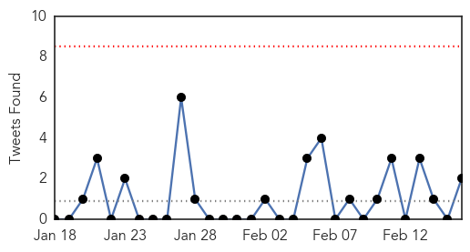
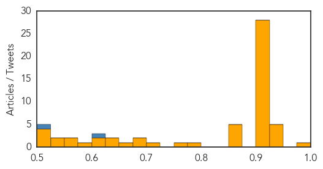
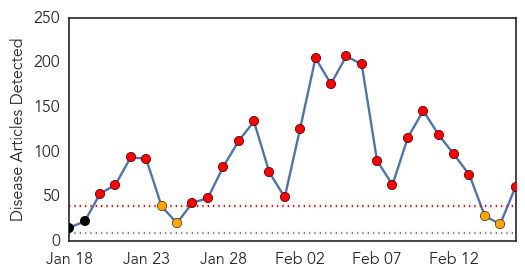

Unknown
30-Day Web Trend
0 alerts, 0 warnings

30-Day Twitter Trend
0 alerts, 0 warnings

Article Locations

Article Confidences
Top Articles:
- 0.980
- Scarlet fever: Rise in cases across the Bristol area sparks warning
- 0.949
- Typhoid fever cases investigated in northwest Oklahoma
- 0.947
- Flu vaccine gives HK children moderate protection against H3N2: study - Headlines, features, photo and videos from ecns.cn
- 0.943
- Scarlet fever: Parents and schools urged to be vigilant as illness doubles in Nottingham
- 0.937
- Monkey fever, a new challenge for Kerala
- 0.928
- Seasonal mortality rate remains high
- 0.917
- Chicago Tribune
- 0.917
- Chicago Tribune
- 0.917
- Chicago Tribune
- 0.917
- Chicago Tribune
- 0.917
- Chicago Tribune
- 0.917
- Chicago Tribune
- 0.917
- Chicago Tribune
- 0.917
- Chicago Tribune
- 0.917
- Chicago Tribune
- 0.917
- Chicago Tribune
- 0.917
- Chicago Tribune
- 0.917
- Chicago Tribune
- 0.917
- Chicago Tribune
- 0.917
- Chicago Tribune
- 0.917
- Chicago Tribune
- 0.917
- Chicago Tribune
- 0.917
- Chicago Tribune
- 0.917
- Chicago Tribune
- 0.917
- Chicago Tribune
- 0.917
- Chicago Tribune
- 0.917
- Chicago Tribune
- 0.917
- Chicago Tribune
- 0.917
- Chicago Tribune
- 0.917
- Chicago Tribune
- 0.910
- The world windows to Thailand
- 0.910
- The world windows to Thailand
- 0.910
- The world windows to Thailand
- 0.910
- The world windows to Thailand
- 0.866
- Evacuation warning issued for coastal towns after Japan quake
- 0.866
- Obama offers condolences to Danish prime minister after Copenhagen attacks
- 0.866
- Ukrainian military rejects rebel offer of corridor out of Debaltseve
- 0.866
- Nigeria says recaptures northeast towns from Boko Haram
- 0.866
- Libyan air force commander says Libyan war planes bombed targets in Sirte, Ben Jawad
- 0.781
- Health warning issued for Te Wairewa/ Lake Forsyth
- 0.758
- KalaCORE launched to eliminate visceral leishmaniasis
- 0.702
- Health Department 2/16/2015 Metro Public Health Department will be closed Tuesday, February 17 due to Icy Road Conditions (City of Nashville, TN)
- 0.693
- Prostitutes drop allegations against Strauss-Kahn in pimping trial
- 0.693
- Egypt, France to conclude €5.2 billion deal for Rafale jets
- 0.652
- Synthetic vaccine sought for polio
- 0.648
- Scientists find new, aggressive strain of HIV in Cuba
- 0.636
- What's wrong with giving nurses a go at improving public healthcare?
- 0.623
- Synthetic vaccine sought to finally eradicate polio
- 0.618
- Bird flu strikes second California poultry farm
- 0.581
- This February, Dr. Michael Neeley Raises Awareness of Gum Disease and Modern Treatment Options in Honor of Gum Disease Awareness Month
Showing top 50 articles...
Top Tweets:
- 0.604
- RT: Agradecer a las autoridades de por la predisposición y compromiso en la búsqueda de objetivos de I + D. http://t…
- 0.501
- RT: KSA reports +5 MERS cases, including expat healthcare worker who caught it in hospital. 34 cases in the past week. h…
Measles
30-Day Web Trend
24 alerts, 4 warnings

30-Day Twitter Trend
5 alerts, 0 warnings

Article Locations

Article Confidences
Top Articles:
- 0.993
- Education, vaccines help prevent spread of measles
- 0.993
- News Scan for Feb 16, 2015
- 0.981
- California has three new measles cases, Arizona says outbreak winding down
- 0.975
- Five measles case confirmed in Niagara
- 0.969
- Another Perspective on the Safety and Sensibility of Vaccination
- 0.969
- Measles outbreak could cause state of emergency if it reaches Madison · The Badger Herald
- 0.964
- Facts parents should know about measles
- 0.960
- Health officials extra cautious with measles reports now
- 0.960
- Health officials extra cautious with measles reports now
- 0.959
- Colo. ranks low in measles vaccination rate
- 0.959
- Measles outbreak disappointing and preventable
- 0.959
- Measles outbreak highlights the importance of adult immunization
- 0.956
- Villanova nursing professor advises parents on steps to take to prevent measles
- 0.939
- Measles Outbreak Documented Among Fully Immunized Group of Children
- 0.937
- Measles Outbreak Highlights Debate Over Vaccines
- 0.931
- Measles warnings issued in Toronto, Niagara following newly-confirmed cases
- 0.921
- Over 100 Measles Vaccine Deaths, Zero Measles Deaths, Since ’04
- 0.900
- Measles – The Americas
- 0.889
- Halton Region has confirmed case of measles
- 0.869
- Downers Grove schools report high vaccination rates
- 0.867
- City's measles incubation period has passed
- 0.864
- Banner Health urges measles vaccinations
- 0.855
- Obama’s budget proposal cuts $50 million from immunization funding
- 0.849
- Editorial: Vaccinate in the public interest
- 0.847
- Rise in measles cases in Ontario prompts official warning
- 0.830
- Health advisory issued after person with measles attends Etobicoke youth event
- 0.827
- W.Va. pediatricians urge vaccines amid measles outbreak
- 0.818
- Vaccine exemptions up in NWA amid nation's measles outbreak
- 0.811
- 1,000 teens may have been exposed to measles at Christian concert
- 0.795
- Ontario reports three new cases of measles
- 0.790
- The measles challenge for doctors: recognizing a disease they have never seen
- 0.755
- Cluster of Ontario measles cases linked to Toronto youth event
- 0.749
- New study shows majority of Americans trust vaccines
- 0.726
- Vaccination Exemptions under Debate
- 0.724
- Nearly half of California, Disneyland measles cases unvaccinated
- 0.722
- Test negative for measles in one Portage County case
- 0.720
- Rep. Becky Corbin supports vaccines, legislation change
- 0.717
- 1 suspected measles case in Portage County comes back negative
- 0.705
- Three new cases of measles confirmed in Ontario's Niagara Region
- 0.695
- Doctors reveal threats of adults skipping vaccines - Live5News.com
- 0.673
- More measles cases feared on North Olympic Peninsula after unvaccinated girl exposes school, clinic -- Port Angeles Port Townsend Sequim Forks Jefferson County Clallam County Olympic Peninsula Daily N
- 0.673
- The Realities of Not Vaccinating
- 0.659
- Is Missouri missing its shots?
- 0.650
- Pediatricians struggle to win over antivaccine parents
- 0.649
- Protect yourself and others
- 0.647
- Canada warns of measles at Christian youth event
- 0.641
- Canada warns of measles at Christian youth event
- 0.633
- Four new Measles cases confirmed in Ontario - Toronto
- 0.631
- School vaccine focus turns to faculty, staff in measles outbreak
- 0.593
- Delaying Vaccinations Is Not OK, Doctors Say
Showing top 50 articles...
Top Tweets:
-
No tweets found for Feb 16, 2015